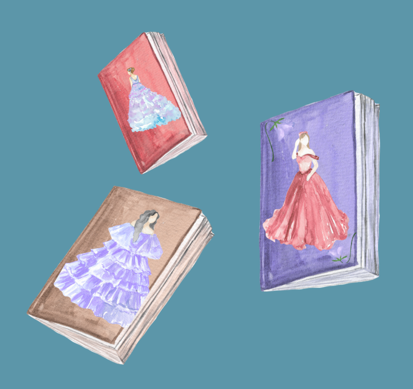
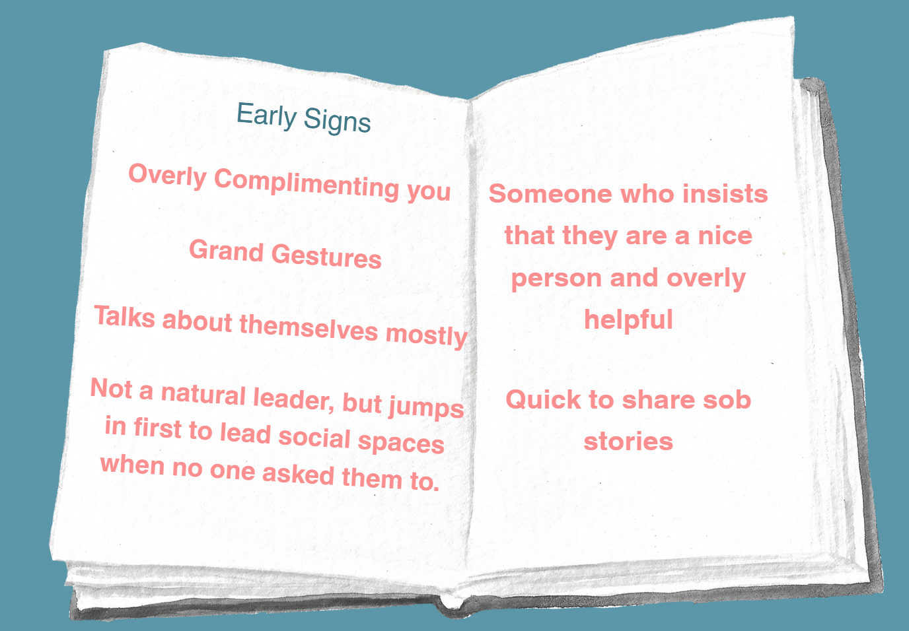

Why do Others not Notice Emotionally Abusive People?
The first pages of a book set the tone for the story you are going to read. Like how the words ‘ Once upon a time’ tell you that you’re reading a fairytale. The front cover may also reflect this, with fairytale ones usually being very pretty and decorated with flowers and ballgowns.
Maybe you noticed that the book itself felt a bit different, but it would be hard for you to tell. That’s why you shouldn’t blame yourself for starting to read the story…

Ordinary people can match up to the early signs, its difficult to distinguish them from those who aren’t behaving from a truly kind place
Click through the stages below to explore the metaphor:
Emotional abuse works in a similar way. You keep feeling good and then bad around the person. Other times you may find the person very annoying, without being able to explain why.
Sometimes this can be down to your own insecurities, but often it can be because you are sensing something isn’t genuine. Remember you never have to read the full story. If you feel uncomfortable take the steps to leave safely.
The feeling you had was right. It wasn’t a fairytale after all. In fact it is a horror book. The plot doesn’t make sense anymore, it’s the total opposite from the beginning. That was a disguise all along.
Others may not believe you when you tell them the truth about the book. Not because you’re wrong, but because from their perspective they only know about the front cover and first pages. The ones that made it seem like a fairytale.
Reflecting on the Story
Why is it so hard for people on the outside to see what is really happening?